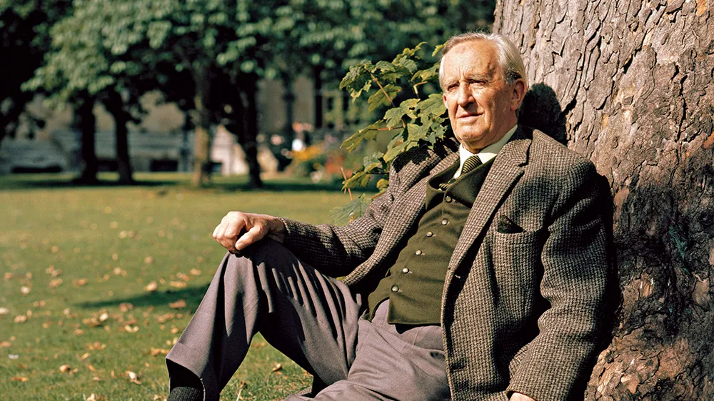
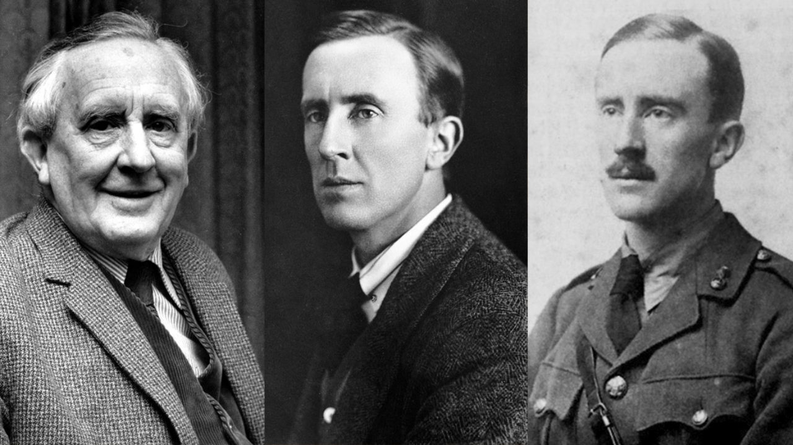

Basic info
John Ronald Reuel Tolkien (/ˈruːl ˈtɒlkiːn/,[a] 3 January 1892 – 2 September 1973) was an English writer
and philologist. He was the author of the high fantasy works The Hobbit and The Lord of the Rings.
From 1925 to 1945, Tolkien was the Rawlinson and Bosworth Professor of Anglo-Saxon and a Fellow of
Pembroke College, both at the University of Oxford. He then moved within the same university to become
the Merton Professor of English Language and Literature and Fellow of Merton College, and held these
positions from 1945 until his retirement in 1959. Tolkien was a close friend of C. S. Lewis, a co-member
of the informal literary discussion group The Inklings. He was appointed a Commander of the Order of the
British Empire by Queen Elizabeth II on 28 March 1972.
After Tolkien's death, his son Christopher published a series of works based on his father's extensive
notes and unpublished manuscripts, including The Silmarillion. These, together with The Hobbit and The
Lord of the Rings, form a connected body of tales, poems, fictional histories, invented languages, and
literary essays about a fantasy world called Arda and, within it, Middle-earth. Between 1951 and 1955,
Tolkien applied the term legendarium to the larger part of these writings.
While many other authors had published works of fantasy before Tolkien, the tremendous success of The
Hobbit and The Lord of the Rings ignited a profound interest in the fantasy genre and ultimately
precipitated an avalanche of new fantasy books and authors. As a result, he has been popularly
identified as the "father" of modern fantasy literature and is widely regarded as one of the most
influential authors of all time.
Biography

Childhood
John Ronald Reuel Tolkien was born on 3 January 1892 in Bloemfontein in the Orange Free State (later
annexed by the British Empire; now Free State Province in the Republic of South Africa), to Arthur Reuel
Tolkien (1857–1896), an English bank manager, and his wife Mabel, née Suffield (1870–1904). The couple
had left England when Arthur was promoted to head the Bloemfontein office of the British bank for which
he worked. Tolkien had one sibling, his younger brother, Hilary Arthur Reuel Tolkien, who was born on 17
February 1894.
As a child, Tolkien was bitten by a large baboon spider in the garden, an event some believe to have
been later echoed in his stories, although he admitted no actual memory of the event as an adult. In an
earlier incident from Tolkien's infancy, a young family servant took the baby to his homestead,
returning him the next morning.
When he was three, he went to England with his mother and brother on what was intended to be a lengthy
family visit. His father, however, died in South Africa of rheumatic fever before he could join
them. This left the family without an income, so Tolkien's mother took him to live with her parents
in Kings Heath, Birmingham. Soon after, in 1896, they moved to Sarehole (now in Hall Green), then a
Worcestershire village, later annexed to Birmingham. He enjoyed exploring Sarehole Mill and Moseley
Bog and the Clent, Lickey and Malvern Hills, which would later inspire scenes in his books, along with
nearby towns and villages such as Bromsgrove, Alcester, and Alvechurch and places such as his aunt
Jane's farm Bag End, the name of which he used in his fiction.
Mabel Tolkien taught her two children at home. Ronald, as he was known in the family, was a keen
pupil. She taught him a great deal of botany and awakened in him the enjoyment of the look and feel
of plants. Young Tolkien liked to draw landscapes and trees, but his favourite lessons were those
concerning languages, and his mother taught him the rudiments of Latin very early.
Tolkien could read by the age of four and could write fluently soon afterwards. His mother allowed him
to read many books. He disliked Treasure Island and "The Pied Piper" and thought Alice's Adventures in
Wonderland by Lewis Carroll was "amusing". He liked stories about "Red Indians" (the term then used for
Native Americans in adventure stories) and works of fantasy by George MacDonald. In addition,
the "Fairy Books" of Andrew Lang were particularly important to him and their influence is apparent in
some of his later writings.
Birmingham Oratory, where Tolkien was a parishioner and altar boy (1902–1911)
Mabel Tolkien was received into the Roman Catholic Church in 1900 despite vehement protests by her
Baptist family, which stopped all financial assistance to her. In 1904, when J. R. R. Tolkien was
12, his mother died of acute diabetes at Fern Cottage in Rednal, which she was renting. She was then
about 34 years of age, about as old as a person with diabetes mellitus type 1 could survive without
treatment—insulin would not be discovered until 1921, two decades later. Nine years after her death,
Tolkien wrote, "My own dear mother was a martyr indeed, and it is not to everybody that God grants so
easy a way to his great gifts as he did to Hilary and myself, giving us a mother who killed herself with
labour and trouble to ensure us keeping the faith."
Before her death, Mabel Tolkien had assigned the guardianship of her sons to her close friend, Father
Francis Xavier Morgan of the Birmingham Oratory, who was assigned to bring them up as good
Catholics. In a 1965 letter to his son Michael, Tolkien recalled the influence of the man whom he
always called "Father Francis": "He was an upper-class Welsh-Spaniard Tory, and seemed to some just a
pottering old gossip. He was—and he was not. I first learned charity and forgiveness from him; and in
the light of it pierced even the 'liberal' darkness out of which I came, knowing more about 'Bloody
Mary' than the Mother of Jesus—who was never mentioned except as an object of wicked worship by the
Romanists." After his mother's death, Tolkien grew up in the Edgbaston area of Birmingham and
attended King Edward's School, Birmingham, and later St Philip's School. In 1903, he won a Foundation
Scholarship and returned to King Edward's.
Youth
While in his early teens, Tolkien had his first encounter with a constructed language, Animalic, an
invention of his cousins, Mary and Marjorie Incledon. At that time, he was studying Latin and
Anglo-Saxon. Their interest in Animalic soon died away, but Mary and others, including Tolkien himself,
invented a new and more complex language called Nevbosh. The next constructed language he came to work
with, Naffarin, would be his own creation. Tolkien learned Esperanto some time before 1909.
Around 10 June 1909 he composed "The Book of the Foxrook", a sixteen-page notebook, where the "earliest
example of one of his invented alphabets" appears. Short texts in this notebook are written in
Esperanto.
In 1911, while they were at King Edward's School, Tolkien and three friends, Rob Gilson, Geoffrey Bache
Smith, and Christopher Wiseman, formed a semi-secret society they called the T.C.B.S. The initials stood
for Tea Club and Barrovian Society, alluding to their fondness for drinking tea in Barrow's Stores near
the school and, secretly, in the school library. After leaving school, the members stayed in
touch and, in December 1914, they held a council in London at Wiseman's home. For Tolkien, the result of
this meeting was a strong dedication to writing poetry.
In 1911, Tolkien went on a summer holiday in Switzerland, a trip that he recollected vividly in a 1968
letter, noting that Bilbo's journey across the Misty Mountains ("including the glissade down the
slithering stones into the pine woods") is directly based on his adventures as their party of 12 hiked
from Interlaken to Lauterbrunnen and on to camp in the moraines beyond Mürren. Fifty-seven years later,
Tolkien remembered his regret at leaving the view of the eternal snows of Jungfrau and Silberhorn, "the
Silvertine (Celebdil) of my dreams". They went across the Kleine Scheidegg to Grindelwald and on across
the Grosse Scheidegg to Meiringen. They continued across the Grimsel Pass, through the upper Valais to
Brig and on to the Aletsch glacier and Zermatt.
In October of the same year, Tolkien began studying at Exeter College, Oxford. He initially read
classics but changed his course in 1913 to English language and literature, graduating in 1915 with
first-class honours. Among his tutors at Oxford was Joseph Wright, whose Primer of the Gothic
Language had inspired Tolkien as a schoolboy.
Family
The Tolkiens had four children: John Francis Reuel Tolkien (17 November 1917 – 22 January 2003), Michael
Hilary Reuel Tolkien (22 October 1920 – 27 February 1984), Christopher John Reuel Tolkien (21 November
1924 – 16 January 2020) and Priscilla Mary Anne Reuel Tolkien (18 June 1929 – 28 February 2022).
Tolkien was very devoted to his children and sent them illustrated letters from Father Christmas when
they were young.
Final years
Edith died on 29 November 1971, at the age of 82. Ronald returned to Oxford, where Merton College gave
him convenient rooms near the High Street. He missed Edith, but enjoyed being back in the city.
Tolkien was made a Commander of the Order of the British Empire in the 1972 New Year Honours and
received the insignia of the Order at Buckingham Palace on 28 March 1972. In the same year Oxford
University gave him an honorary Doctorate of Letters.
He had the name Luthien [sic] engraved on Edith's tombstone at Wolvercote Cemetery, Oxford. When Tolkien
died 21 months later on 2 September 1973 from a bleeding ulcer and chest infection, at the age of
81, he was buried in the same grave, with "Beren" added to his name. Tolkien's will was proven on 20
December 1973, with his estate valued at £190,577 (equivalent to £2,454,000 in 2023)